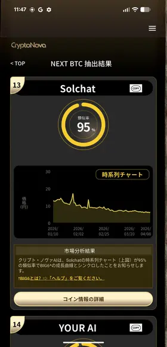

ビットコインのように、
大きく成長した仮想通貨を見て、
もっと早く知っていれば…
そう思ったことはありませんか？
でも同時に、
なんだか怪しい
何を買えばいいか
分からない
そもそも買い方が
分からない
そんな理由で、一歩踏み出せない。
"何を見ればいいか
分からないまま
始めること"
— THE TRUTH OF FAILURE —
SNSの情報を
鵜呑みにする
なんとなく
有名だから買う
よく分からないまま
購入する
この状態で始めると、
ほぼ確実に迷います。
有望な
仮想通貨の候補
正しい
買い方
これだけで、
仮想通貨投資は
一気にシンプルになります。
その"最初の答え"を出すのが
です。
Crypto Novaは、
仮想通貨市場の膨大なデータから
👉
次に注目されやすい
仮想通貨候補だけを抽出
する分析アプリ

0
種類 以上
膨大な仮想通貨の海
数個
注目すべき候補
見るべきものだけ
約180万種類以上ある仮想通貨の中から
見るべき候補だけが表示されるため、
という状態から抜け出せます。
AIモデル
統計モデル
バラバラな情報ではなく、
「AIモデル×統計モデル」の独自データベースに基づいた候補を見ることで
自分で判断できる状態に変わります。
候補を見る
買う
難しい分析を覚えなくても、
このシンプルな流れでスタートできます。